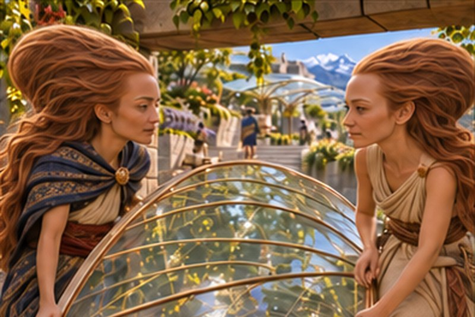

I volti della città di pietra
Finzione. Illustrazioni IA di una città di pietra immaginaria. Ogni coppia mostra prima il materiale di partenza di Jani Korpi e poi un’illustrazione IA ispirata al profilo del cranio. Gran parte del materiale di partenza è costituito da fotografie dal Perù; la coppia 02 è composta da fotogrammi video, e le coppie 12–13 includono fotogrammi video delle sculture del Cairo. La città di pietra e i suoi abitanti sono inventati.
Una giornata nella città di pietra (finzione)
Questa storia è inventata. Non descrive la storia del Perù o dell’Egitto, e i suoi personaggi non hanno alcun legame con i defunti che si vedono nelle foto. La storia lega le tredici illustrazioni come eventi di un unico giorno immaginario.
La città di pietra è costruita a terrazze sul fianco di una montagna. Canali portano l’acqua da sorgenti più in alto sul pendio, e coperture di vetro fanno ombra ai vicoli. Nella città tutto si misura: i giunti delle pietre, l’altezza dell’acqua e l’angolo della luce. Misurare qui è una lingua comune.
Al centro della giornata ci sono tre persone. Ilun, l’ottico, leviga i prismi che i geometri della città usano per leggere gli angoli. Sava, la custode dell’acqua, fa sì che ogni terrazza riceva l’acqua a turno. Tiru, la tessitrice, realizza teli ombreggianti che proteggono il mercato e gli orti dal sole di mezzogiorno.
Al mattino Sava si accorge che troppo poca acqua arriva alle terrazze più basse. Il guasto potrebbe essere nella pendenza di un canale, in un giunto rotto o in una chiusa. Nel corso della giornata la città cerca il guasto insieme: uno scalpellino controlla i giunti, una giardiniera legge nelle piante i segni della siccità, e alcune costruttrici portano una nuova copertura di vetro sopra il punto in cui l’acqua viene divisa. Al mercato la gente scambia mais, cesti e notizie.
La sera l’acqua scorre di nuovo. Tiru ricuce il bordo di un telo ombreggiante, e il misuratore del canale regola l’ultima chiusa. Le forme vengono dalle foto di Jani; gli eventi, i nomi e i personaggi sono inventati.
01 · L'ottico regola un prisma


Racconto (finzione): La mattina comincia nel laboratorio di misura. Ilun ruota un prisma finché il raggio di luce colpisce il suo segno. Più tardi Sava leggerà gli angoli del canale con lo stesso prisma, quindi il lavoro deve essere finito prima che il sole si alzi sulle terrazze.
Punto di partenza: La larghezza della fronte e la distanza tra le orbite hanno guidato la forma della parte alta del volto. Mascella e bocca sono scelte dell’illustratore.
Foto originale 01 e osservazioni · Le coppie 04 e 10 mostrano forse lo stesso oggetto di questa coppia.
Ulteriori informazioni sulla pagina e mostra tutte le 13 coppie
La pagina si basa sull’idea di Jani di una società avanzata e immaginaria che precedette gli esseri umani. I crani nelle foto di partenza sono resti umani. Nel materiale di Paracas studiato la testa allungata è stata interpretata come una modellazione eseguita durante l’infanzia; i dettagli individuali dei crani che Jani ha fotografato non sono stati confermati. La città di pietra e i suoi abitanti sono inventati. I crani nelle foto di partenza sono resti umani la cui origine e storia collezionistica sono note solo in parte (vedi la pagina dei fatti). Per questo le illustrazioni non ritraggono queste persone, e le foto dei crani servono qui solo come punto di partenza per le forme. Lo strumento di IA usato per le illustrazioni non è registrato nei dati delle immagini. I capelli ondulati rosso rame, la parte superiore del cranio e la nuca accentuate, gli occhi grandi e il mento e il naso piccoli sono scelte artistiche ispirate all’arte di Amarna. L’illustrazione non è una ricostruzione facciale né un risultato di ricerca sul colore degli occhi o dei capelli.
Ogni coppia mostra prima la fotografia di Jani e, accanto o sotto, un’illustrazione IA ispirata al profilo del cranio, cioè finzione. Il numero collega la foto di partenza e l’illustrazione. Nelle foto di partenza la mandibola manca spesso, quindi mandibola e bocca sono scelte dell’illustratore. Espressioni, colore della pelle, capelli e vita quotidiana dei personaggi appartengono alla città di pietra. L’illustrazione non può dirci i tratti del volto, la specie o l’aspetto del defunto.
Che cosa ci dicono i crani?Pagina dei fatti: foto 01–11, testi espositivi e ricerca pubblicata.
02 · Un carico di pietre passa nel vicolo


Racconto (finzione): Un carico di pietre avanza in un vicolo stretto verso la terrazza più bassa. Il conducente sa solo che prima di sera servono nuovi blocchi per il bordo del canale. Nessuno sa ancora dove sia il guasto.
Punto di partenza: La fronte del personaggio si alza piuttosto verticale. Il modello è stato il cranio chiaro nella fila in alto della raccolta video.
03 · La scalpellina controlla un giunto


Racconto (finzione): Una scalpellina esamina con una lente un vecchio giunto del canale. Il giunto è integro. Manda a dire a Sava: il guasto non è nella pietra, ma da qualche parte più in alto.
Punto di partenza: Nella vista laterale rivolta a destra, la forma più importante è la linea che va dalla fronte alla nuca curvata all’indietro.
04 · Il giardiniere esamina un baccello


Racconto (finzione): Sulla terrazza più bassa un giardiniere apre un baccello e vede che si è seccato troppo presto. Dice che da diversi giorni arriva meno acqua.
Punto di partenza: La forma rotonda della foto 01 ritorna nella parte alta del volto. Le mani aiutano a valutare le proporzioni della foto di partenza.
Foto originale 04 e osservazioni · Le coppie 01 e 10 mostrano forse lo stesso oggetto di questa coppia.
05 · La custode dell’acqua misura i livelli del canale


Racconto (finzione): Sava posa una livella sul bordo del canale e misura i dislivelli punto per punto. La misura mostra che il canale pende nel verso giusto. Il guasto deve quindi trovarsi al punto di ripartizione o in una chiusa.
Punto di partenza: Il punto di partenza è stato il profilo rivolto a sinistra del cranio in primo piano. La curva della nuca prosegue dietro l’orecchio.
06 · Le tessitrici esaminano una stoffa


Racconto (finzione): Le tessitrici sollevano un telo sottile controluce. Tiru ha bisogno di un telo ombreggiante sopra il punto di ripartizione, perché l’acqua non evapori nel caldo di mezzogiorno. Il telo deve essere leggero ma fitto.
Punto di partenza: La sommità del cranio di sinistra scende all’indietro. Il profilo di quello di destra si alza più verticale.
07 · Incontro al mercato del mais


Racconto (finzione): Al mercato del mais tre cittadini si scambiano merci e notizie. Una voce sulla scarsità d’acqua gira da tutta la mattina. Il mercato concorda che i costruttori porteranno una nuova copertura di vetro al punto di ripartizione.
Punto di partenza: Le tre angolazioni hanno suggerito tre diversi profili del volto. La figura centrale del mercato è immaginata adulta.
08 · Due costruttrici trasportano una copertura di vetro attraverso il portale



Racconto (finzione): Due costruttori portano una copertura di vetro curva attraverso la porta. È pesante e fragile, perciò camminano piano e si guardano a ogni passo.
Punto di partenza: La forma più verticale del cranio di sinistra e la linea della fronte più morbida di quello di destra si vedono meglio confrontando i lati.
09 · Il canto della ruota idraulica


Racconto (finzione): La ruota idraulica ha un suono sbagliato. Sava e la sua aiutante la ascoltano e trovano una paratoia bloccata al punto di ripartizione. Quando la paratoia si libera, il suono della ruota cambia e l’acqua comincia a muoversi.
Punto di partenza: La diversa inclinazione delle teste di sinistra e di destra dà un volto a due abitanti chini sulla ruota idraulica.
10 · Il flautista nel vicolo di pietra


Racconto (finzione): Quando l’acqua scorre di nuovo, Ilun lascia il laboratorio e suona nel vicolo, con il suo flauto, un segnale che tutto il pendio conosce. Le terrazze in alto rispondono con la stessa melodia.
Punto di partenza: La vista laterale mostra la sommità arrotondata e il bordo dell’orbita. La forma delle labbra e della mascella del suonatore è immaginata.
Foto originale 10 e osservazioni · Le coppie 01 e 04 mostrano forse lo stesso oggetto di questa coppia.
11 · Scambio di ceste nella città a terrazze


Racconto (finzione): Sulle terrazze la gente si scambia ceste. Il giardiniere manda al mercato le prime piante salvate, e dalla terrazza vicina torna frutta.
Punto di partenza: I molti profili nella vetrina hanno dato origine a una veduta di città. Gli abitanti in primo piano sono stati ideati per questa scena.
12 · La tessitrice ripara un telo parasole

Osservi la curva della calotta, la linea della fronte e quanto si estende la parte posteriore della testa. Le foto scattate da direzioni diverse non permettono di confrontare le proporzioni esatte. Sotto, l'interpretazione dell'illustratore.

Racconto (finzione): Al calar della sera Tiru ricuce il bordo del telo ombreggiante. Ha protetto il punto di ripartizione tutto il pomeriggio, e il vento le ha aperto un piccolo buco in un angolo. Fa passare il filo prima che faccia buio.
13 · La misuratrice del canale regola una paratoia

Osservi la curva della calotta, la linea della fronte e quanto si estende la parte posteriore della testa. Le foto scattate da direzioni diverse non permettono di confrontare le proporzioni esatte. Sotto, l'interpretazione dell'illustratore.

Racconto (finzione): Per ultimo il misuratore del canale regola la chiusa per la notte e annota le misure del giorno per Sava. Al mattino il prisma di Ilun verificherà se gli angoli hanno tenuto durante la notte.
I volti di pietra del Cairo e i crani del Perù
Le teste di Amarna sono sculture, e i musei descrivono la calotta allungata come un tratto stilistico dell'arte di Amarna (Global Egyptian Museum, JE 44869 · Museo Egizio di Berlino, ÄM 14145). I crani peruviani sono resti umani; nel materiale di Paracas studiato la testa allungata è stata interpretata come una modellazione praticata nell'infanzia (contesto della ricerca). Il legame tra loro è solo visivo.
Le coppie 12 e 13 affiancano le teste di pietra filmate da Jani al Museo Egizio del Cairo il 15 febbraio 2024, le foto dei crani del Perù e i personaggi della città di pietra. Le immagini di partenza del Cairo sono ritagli di fotogrammi del video di Jani (visita al museo da 51:31). I volti dei passanti sono stati sfocati. Le foto del Cairo e il contesto della ricerca si trovano anche nella pagina dei fatti: Il Cairo 2024.
I numeri d'oggetto non si distinguono nei fotogrammi di Jani, quindi la scheda d'oggetto del museo è un termine di confronto e non un'identificazione. La collezione del Museo Egizio del Cairo comprende la testa in quarzite JE 44869 trovata a Tell el-Amarna, che secondo il Global Egyptian Museum è probabilmente Meritaton, la figlia maggiore di Akhenaton. La tedesca Deutsche Orient-Gesellschaft la portò alla luce nel 1912 nella bottega dello scultore Thutmose (Global Egyptian Museum). Un volto di pietra di principessa di Amarna dello stesso tipo si trova anche a New York (The Met, Head of a princess from a group statue). La scheda d'oggetto del museo del Cairo: Head of Princess, daughter of Akhenaten.
La stessa esposizione nel video peruviano

Il tratto comune aiuta a identificare la vetrina. Il luogo esatto di ritrovamento e l’identità degli oggetti nella vetrina restano aperti. Foto 09 nella pagina dei fatti.
Un altro esempio da Amarna: il rilievo di famiglia di Berlino

Il rilievo di famiglia di Berlino mostra come i profili della famiglia reale venissero rappresentati anche incisi su una superficie di pietra piana. La calotta delle figlie si allunga all'indietro. Secondo il museo, il tratto è un puro espediente stilistico e non il segno di una forma ereditaria o provocata intenzionalmente (descrizione del rilievo da parte del museo, in inglese).
Le espressioni, il colore della pelle, i capelli e la vita quotidiana dei personaggi appartengono all'immaginaria città di pietra. Alcune foto mostrano lo stesso oggetto da direzioni diverse.